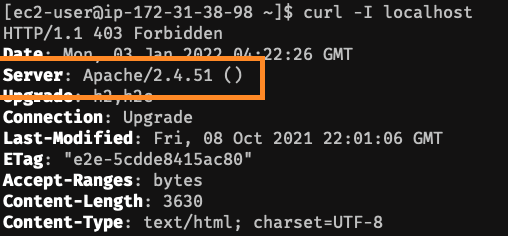
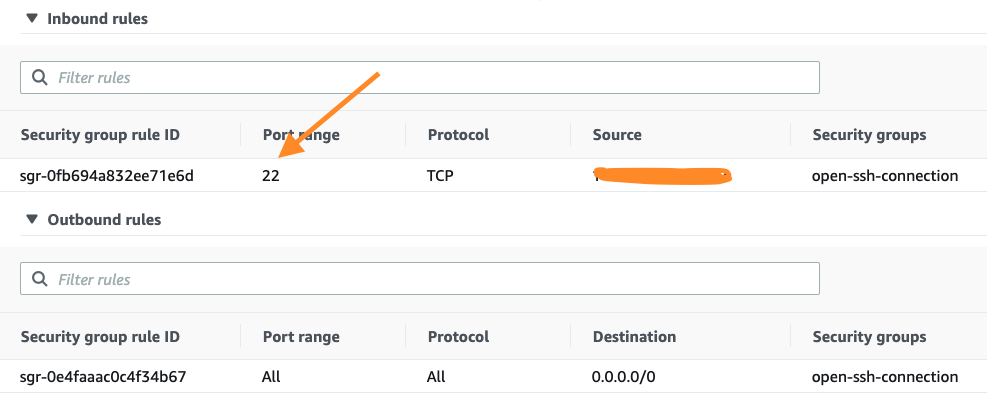
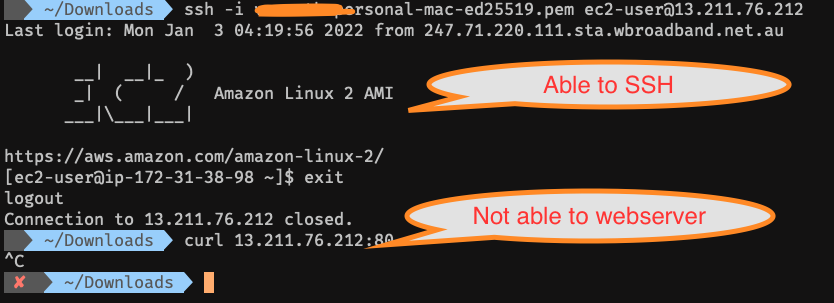
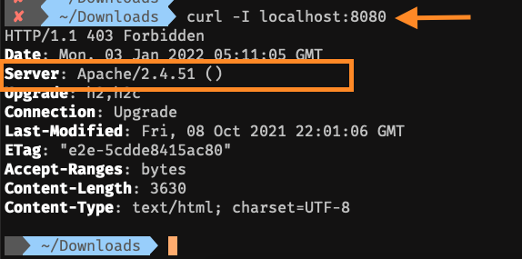

Welcome to Productivity Page
In this Productivity page - I will be documenting the simple tips and tricks useful in your work and daily life.
Tunneling via SSH
SSH tunneling (a.k.a SSH portforwarding) is a powerful way to bypass firewall to establish networking connections. In this example, I am going to demonstrate the Local Tunneling and Remote (Reverse) Tunneling.
Local Tunneling
Local Tunneling enables the connection from client machine to Target Machine via SSH connection.
Apache running on Server

Security Groups(Firewall) not having access to port 80

Not able to access via Client Machine 
Command to enable local portforwarding
In this below example tunneling connection to Port 80 on the server and access the webserver from Port 8080
ssh -i <SSHKey.pem> -L 8080:localhost:80 ec2-user@13.211.76.212
-L enables Local Port Forwarding
